Ionic solution¶
The very basics of GROMACS through a simple example
{kind=link}
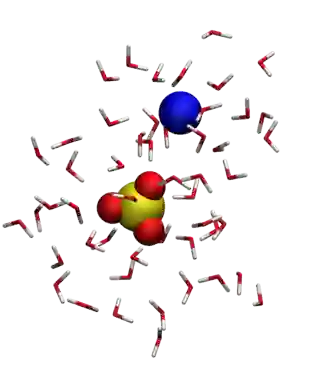
{kind=link}
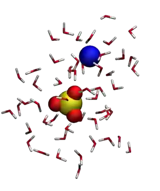
The objective of this tutorial is to use the open-source code GROMACS [8] to perform a molecular dynamics simulation. The system consists of a bulk solution of water mixed with sodium (\(\text{Na}_+\)) and sulfate (\(\text{SO}_4^{2-}\)) ions.
This tutorial guides you through setting up a simulation box, adding species to it, and then solvating them with water. It also introduces key components of molecular dynamics simulations, including energy minimization, thermostating, and both \(NVT\) and \(NpT\) equilibration steps. The resulting trajectory is analyzed using GROMACS utilities, radial distribution functions are extracted, and the trajectories are visualized using VMD [1].
Struggling with your molecular simulations project?
Get guidance for your GROMACS simulations. contact-label for personalized advice for your project.
This tutorial is compatible with the 2025.1 GROMACS version.
Populating the box¶
Let us create the simulation box by placing the ions and molecules into it. To do so, we start from an empty box. In a dedicated folder, create an empty file called empty.gro, and copy the following lines into it:
Cubic box
0
3.50000 3.50000 3.50000
The first line, Cubic box, is a comment; the second line indicates the total number of atoms (0 here); and the last line defines the box dimensions in nanometers; in this case, 3.5 by 3.5 by \(3.5~\text{nm}\). This .gro file is written in Gromos87 format.
Let us populate this empty box with \(\text{SO}_4^{2-}\) ions first. To do so,
the GROMACS command named insert-molecules is used, for which one needs to
provide a template for the ion. Within the same folder as empty.gro, create a
new file named so4.gro, and copy the following lines into it:
SO4 ion
5
1 SO4 O1 1 0.608 1.089 0.389
1 SO4 O2 2 0.562 1.181 0.150
1 SO4 O3 3 0.388 1.217 0.339
1 SO4 O4 4 0.425 0.980 0.241
1 SO4 S1 5 0.496 1.117 0.280
1.00000 1.00000 1.00000
This topology file for the \(\text{SO}_4^{2-}\) ion is written in the same Gromos87
format as empty.gro. It contains 5 atoms named O1, O2, O3, O4,
and S1, all grouped in a residue called SO4.
Let us call the gmx insert-molecules command by typing in the terminal:
gmx insert-molecules -ci so4.gro -f empty.gro -o conf.gro -nmol 6 -radius 0.5
Here, the insert-molecules command of GROMACS uses empty.gro as an input (flag -f),
and create a new .gro file named conf.gro (flag -o) with 6 ions in it (flag -nmol).
The -radius 0.5 option is used to prevent ions for being inserted closer than
\(0.5~\text{nm}\) from each other.
Note
Each GROMACS command comes with online documentation. See, for instance, this page for the insert-molecules command.
The output printed in the terminal should indicate that the insertions were successful:
Added 6 molecules (out of 6 requested)
Writing generated configuration to conf.gro
Looking at the generated conf.gro file, it contains 30 atoms, corresponding to the 6 ions:
Cubic box
30
1SO4 O1 1 2.231 2.698 0.397
1SO4 O2 2 2.008 2.825 0.356
1SO4 O3 3 2.009 2.566 0.370
1SO4 O4 4 2.115 2.685 0.165
1SO4 S1 5 2.091 2.693 0.322
(...)
6SO4 O1 26 1.147 3.194 0.656
6SO4 O2 27 1.107 3.341 0.446
6SO4 O3 28 1.349 3.274 0.514
6SO4 O4 29 1.216 3.444 0.658
6SO4 S1 30 1.205 3.313 0.568
3.50000 3.50000 3.50000
Between the second and the last lines, there is one line per atom. Each line indicates, from left to right:
the residue ID, with all 5 atoms from the same \(\text{SO}_4^{2-}\) ion sharing the same residue ID;
the residue name (SO4);
the atom name (O1, O2, O3, O4, or S1);
the atom ID (1 to 30);
the atom position: \(x\), \(y\), and \(z\) coordinates in nanometers.
Note
The format of a .gro file is fixed and very rigid: each column has a specific position and width. Fields such as residue ID, residue name, atom name, atom number, and coordinates must follow the exact formatting rules defined by GROMACS. Any deviation in spacing or alignment may cause parsing errors or incorrect behavior when the file is read by GROMACS.
The generated conf.gro file can be visualized using VMD by typing in the terminal:
vmd conf.gro
Then, download the na.gro template for the \(\text{Na}^+\) ion and add 12 ions using the same command:
gmx insert-molecules -ci na.gro -f conf.gro -o conf.gro -nmol 12 -radius 0.5
Here, importantly, the same conf.gro file is used as both input (-f) and
output (-o), so the 12 ions will be added to the same file named conf.gro.
Finally, download the h2o.gro template for the \(\text{H}_2\text{O}\) molecule,
save it in the same folder, and add 800 water molecules to the system using the
same command once again:
gmx insert-molecules -ci h2o.gro -f conf.gro -o conf.gro -nmol 800 -radius 0.14
The final conf.gro file contains :
Cubic box
3242
1SO4 O1 1 2.660 2.778 1.461
1SO4 O2 2 2.869 2.640 1.392
1SO4 O3 3 2.686 2.533 1.540
1SO4 O4 4 2.840 2.717 1.638
1SO4 S1 5 2.763 2.667 1.507
(...)
818Sol OW1 3239 1.130 0.170 2.960
818Sol HW1 3240 1.155 0.134 3.058
818Sol HW2 3241 1.039 0.132 2.918
818Sol MW1 3242 1.130 0.170 2.960
3.50000 3.50000 3.50000
The molecules and ions have been placed randomly in space, and are therefore arranged in a rather unrealistic manner. For instance, molecules should be oriented away from ions based on their charge, which is not the case, as can be seen using VMD. This will be corrected during energy minimization, where the residues will be moved and rotated according to the forces exerted by their surroundings.
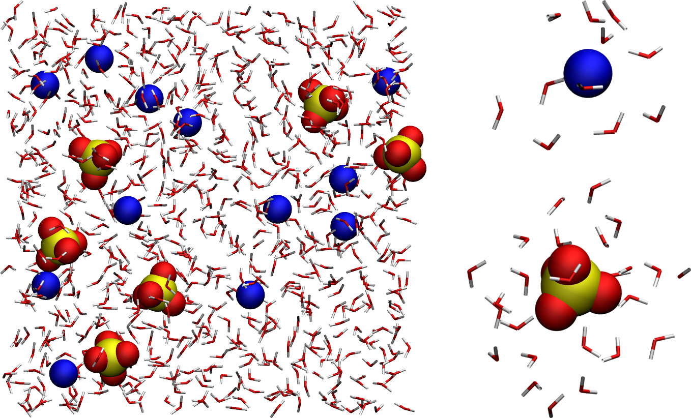
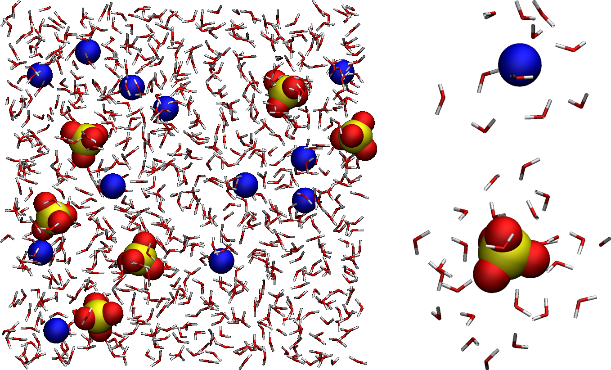
Figure: (Left) Full system showing the \(\text{SO}_4^{2-}\) ions, the \(\text{Na}_+\) ions, and the water molecules, with oxygen atoms in red, hydrogen in white, sodium in blue, and sulfur in yellow. For easier visualization, water molecules are represented as sticks. (Right) Zoom-in on a single \(\text{Na}_+\) ion and a single \(\text{SO}_4^{2-}\), as well as the surrounding water molecules.
In case you encountered a problem during this part of the tutorial, you can download the conf.gro file, and continue with the tutorial.
Set the parameters¶
Parameters for the interactions between the different atoms and molecules are provided in the topology files (.top and .itp). These parameters include both bonded and non-bonded interactions.
About bonded and non-bonded interactions in molecular dynamics
Non-bonded interactions are modeled as a combination of Lennard-Jones and Coulomb potentials:
where:
\(r_{ij}\) is the distance between particles \(i\) and \(j\),
\(\varepsilon\) is the depth of the Lennard-Jones potential well,
\(\sigma\) is the distance at which the Lennard-Jones potential is zero,
\(q_i\) and \(q_j\) are the charges of particles \(i\) and \(j\),
\(\varepsilon_0\) is the vacuum permittivity.
Bonded interactions are used to connect atoms within the same residue, typically modeled using harmonic potentials or similar functional forms. A commonly used expression for bond stretching is the harmonic potential:
where:
\(r\) is the distance between the bonded atoms,
\(r_0\) is the equilibrium bond length,
\(k_b\) is the bond force constant.
First, the topol.top file must be placed in the same folder as the conf.gro file. It contains the following lines:
#include "ff/forcefield.itp"
#include "ff/h2o.itp"
#include "ff/na.itp"
#include "ff/so4.itp"
[ System ]
Na2SO4 solution
[ Molecules ]
SO4 6
Na 12
SOL 700
The first four lines are used to include the values of the parameters provided in four separate files (forcefield.itp, h2o.itp, na.itp, so4.itp), located in the ff/ folder (which will be provided below). The rest of the topol.top file contains the system name (here, Na2SO4 solution) and the list of residues. Here, in agreement with the previously created conf.gro file, there are 6 \(\text{SO}_4^{2-}\) ions, 12 \(\text{Na}^+\) ions, and 700 water molecules.
About topol.top
It is crucial that the order and number of residues in the topology file match the order of the conf.gro file. If there is a mismatch, GROMACS will stop with an error such as:
Fatal error: Number of coordinates in coordinate file does not match topology
This typically means the residue counts or their ordering in the topology do not reflect the actual contents of the coordinate file.
Create a folder named ff/ next to the conf.gro and the topol.top files, and copy the four following files into it:
These four files contain information about the atoms (names, masses, charges, Lennard-Jones coefficients) and residues (bond and angular constraints) for all the species involved in the system.
More specifically, the forcefield.itp file contains a line that specifies
the combination rules as comb-rule 2, which corresponds to the well-known
Lorentz-Berthelot rule [9, 10], where:
\(\epsilon_{ij} = \sqrt{\epsilon_{ii} \epsilon_{jj}}, \sigma_{ij} = \frac{\sigma_{ii} + \sigma_{jj}}{2}\).
In forcefield.itp, this rule is specified as:
[ defaults ]
; nbfunc comb-rule gen-pairs fudgeLJ fudgeQQ
1 2 no 1.0 0.833
Here, the fudge parameters specify how the pair interaction between fourth
neighbors in a residue are handled, which is not relevant for the small
residues considered here. The forcefield.itp file also contains the list
of atoms, and their respective charge in units of the elementary charge
\(e\), as well as their respective Lennard-Jones parameters \(\sigma\)
(in nanometers) and \(\epsilon\) (in kJ/mol):
[ atomtypes ]
; name at.num mass charge ptype sigma epsilon
Na 11 22.9900 1.0000 A 0.23100 0.45000
OS 8 15.9994 -1.0000 A 0.38600 0.12
SO 16 32.0600 2.0000 A 0.35500 1.0465
HW 1 1.0079 0.5270 A 0.00000 0.00000
OW 8 15.9994 0.0000 A 0.31650 0.77323
MW 0 0.0000 -1.0540 D 0.00000 0.00000
Here, ptype is used to differentiate the real atoms (A), such as
hydrogens and oxygens, from the virtual and massless site of the
four-point water model (D).
Finally, the h2o.itp, na.itp, and so4.itp files contain information about the residues, such as their exact compositions, which pairs of atoms are connected by bonds, as well as the parameters for these bonds. In the case of the \(\text{SO}_4^{2-}\), for instance, the sulfur atom forms a bond of equilibrium distance \(0.152~\text{nm}\) and rigidity constant \(3.7656 \times 10^4~\text{kJ/mol/nm}^2\) with each of the four oxygen atoms:
[ bonds ]
; ai aj funct c0 c1
1 5 1 0.1520 3.7656e4
2 5 1 0.1520 3.7656e4
3 5 1 0.1520 3.7656e4
4 5 1 0.1520 3.7656e4
Energy minimization¶
To run GROMACS, one needs to prepare an input file that contains instructions about the simulation, such as:
the number of steps to perform,
the thermostat to be used (e.g. Langevin [11], Berendsen [12]),
the cut-off for the interactions,
the integrator or algorithms (e.g. steepest-descent [13], leap-frog [5]).
It is clear from the configuration (.gro) file that the molecules and ions are currently in a quite unphysical configuration. It would be risky to directly start the molecular dynamics simulation, as atoms would undergo huge forces and accelerate, potentially causing the system to explode.
To bring the system into a more favorable state, let us perform an energy minimization, which consists of moving the atoms until the forces between them are reasonable.
Open a blank file, call it min.mdp, and save it in a new folder named inputs/, located alongside ff/ and topol.top. This is what the repository should look like at this point.
{kind=link}
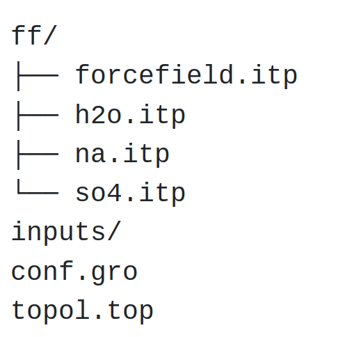
{kind=link}
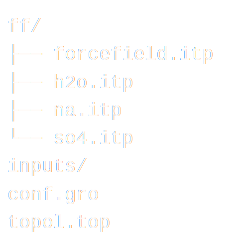
Figure: Structure of the folder containing the .itp, .gro, and .top files.
Copy the following lines into min.mdp:
integrator = steep
nsteps = 5000
These two lines are GROMACS commands. The integrator specifies to GROMACS
that the algorithm to be used is the steepest-descent, which moves the atoms
following the direction of the largest forces until one of the stopping criteria
is reached [13]. The nsteps command specifies
the maximum number of steps to perform, here 5000.
To visualize the trajectory of the atoms during the minimization, let us also add the following command to the input file:
nstxout = 10
The nstxout command requests GROMACS to print the atom positions every 10
steps. The trajectory will be printed in a compressed .trr trajectory file
that can be read by VMD or Ovito.
Let us run that input script using GROMACS. From the terminal, type:
gmx grompp -f inputs/min.mdp -c conf.gro -o min -pp min -po min
gmx mdrun -v -deffnm min
The grompp command is used to preprocess the files in order to prepare
the simulation. This command also checks the validity of the files. By using
the -f and -c options, we specify which input file must be used
(here inputs/min.mdp), as well as the initial configuration, i.e.,
the initial positions of the atoms (here, conf.gro).
The other options -o, -pp, and -po are used to specify the names
of the outputs that will be produced during the run.
The mdrun command calls the engine performing the computation from the
preprocessed files, which is recognized thanks to the -deffnm option. The
-v option enables verbose mode so that more information is printed in
the terminal.
If everything works, information should be printed in the terminal, including:
Steepest Descents converged to machine precision in 534 steps,
but did not reach the requested Fmax < 10.
Potential Energy = -4.9832715e+04
Maximum force = 4.4285486e+02 on atom 30
Norm of force = 4.6696228e+01
The information printed in the terminal indicates that energy minimization has been performed, even though the precision requested by the default parameters was not reached. This message can be ignored—as long as the final potential energy is large and negative, the simulation will proceed just fine.
To appreciate the effect of energy minimization, compare the potential energy of the system and the maximum force at the first and last steps:
(...)
Step= 0, Dmax= 1.0e-02 nm, Epot= -2.29663e+03 Fmax= 1.07264e+04, atom= 29
(...)
Step= 533, Dmax= 1.3e-06 nm, Epot= -4.98327e+04 Fmax= 2.23955e+02, atom= 816
(...)
As can be seen, the maximum force has been reduced by orders of magnitude, down to \(224 ~ \text{kJ/mol/nm}\) (about 0.4 pN). During the execution of GROMACS, the following 7 files must have been created: min.edr, min.gro, min.log, min.mdp, min.top, min.tpr, min.trr.
Let us visualize the trajectories of the atoms during the minimization step using VMD by typing in the terminal:
vmd conf.gro min.trr
With that command, we are importing both a topology file (conf.gro) and a trajectory file (min.trr) into VMD.
Tip for better visualization
You can avoid having molecules and ions being cut by the periodic boundary conditions by rewriting the trajectory using:
gmx trjconv -f min.trr -s min.tpr -o min_whole.trr -pbc whole
Then, select 0 as the group of your choice for the output, and reopen
the modified trajectory using VMD:
vmd conf.gro min_whole.trr
From the trajectory visualization, one can see that the molecules reorient themselves into more energetically favorable positions, and that the distances between the atoms are progressively homogenized.
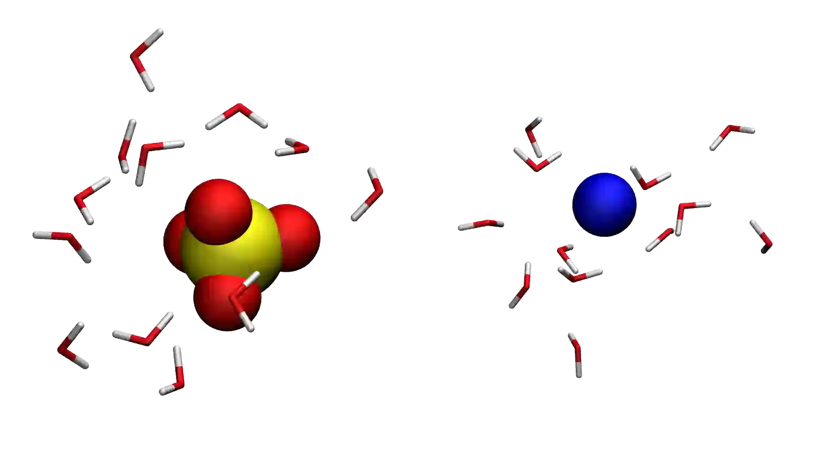
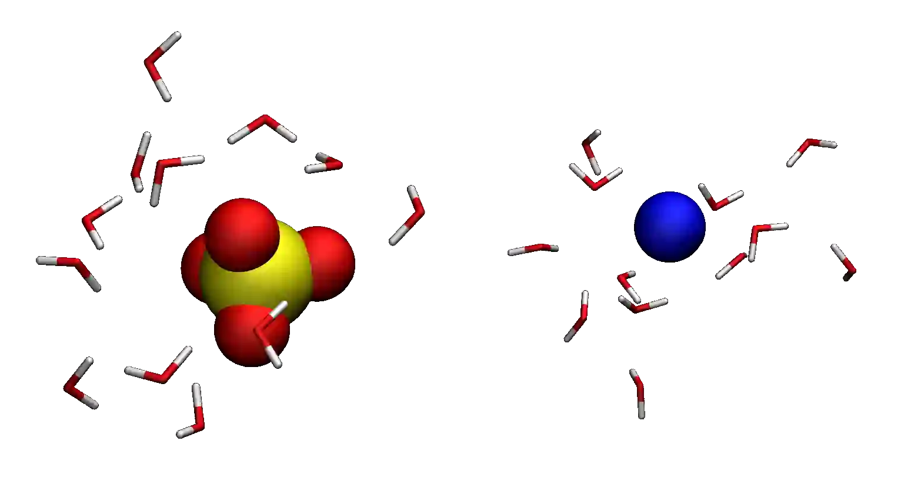
Figure: Molecules and ions rearranging during energy minimization.
Let us have a look at the evolution of the potential energy of the system. To
do so, we can use the gmx energy command of GROMACS. In the terminal, type:
gmx energy -f min.edr -o min-Ep.xvg
Choose Potential by typing 5 (the number may differ in your case),
then press Enter twice.
Here, the portable energy file min.edr produced by GROMACS during the minimization run is used as input, and the result is saved as a .xvg file named min-Ep.xvg. .xvg files can be opened with the Grace software (or equivalent):
xmgrace min-pe.xvg
One can see from the energy plot that the potential energy is initially close to zero. This is expected when atoms are too close to one another and molecules are randomly oriented in space. As the minimization progresses, the potential energy rapidly decreases and reaches a large negative value, which usually indicates that the atoms are now located at appropriate distances from one another.
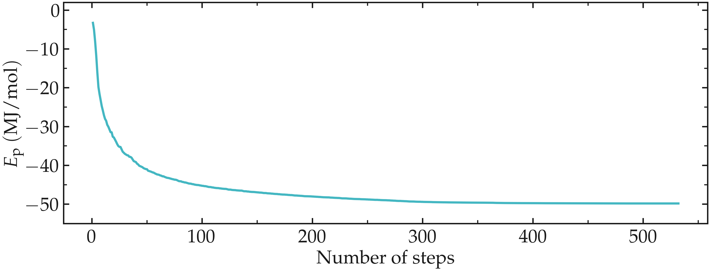
Figure: Evolution of the potential energy, \(E_\text{p}\), as a function of the number of steps during energy minimization.
The system is now in a favorable state, and the molecular dynamics simulation can be started.
Molecular dynamics (\(NVT\))¶
Let us first perform a short (20 picoseconds) equilibration in the \(NVT\) ensemble using molecular dynamics. In the \(NVT\) ensemble, the number of atoms (\(N\)) and the volume (\(V\)) are maintained fixed, and the temperature of the system (\(T\)) is adjusted using a thermostat.
About molecular dynamics
Molecular dynamics (MD) involves solving Newton’s equations of motion to update particle positions and velocities based on the forces applied to the atoms [4]. By default, GROMACS uses the leap-frog Verlet integration scheme [14]. A typical MD simulation follows these steps:
Compute forces on particles using the potential energy function.
Update velocities based on the forces at the current timestep.
Update positions using the velocities from the previous timestep.
Apply periodic boundary conditions and constraints as required.
Repeat for each timestep (e.g., 0.001 ps) throughout the simulation.
Let us create a new input script called nvt.mdp, and save it in the inputs/ folder. Copy the following lines into it:
integrator = md
nsteps = 20000
dt = 0.001
Here, the molecular dynamics (MD) integrator is used, which is a leap-frog
algorithm integrating Newton’s equations of motion. A total of 20,000 steps with
a timestep dt equal to \(0.001 ~ \text{ps}\) will be performed.
Let us cancel the translation of the center of mass of the system:
comm_mode = linear
comm_grps = system
Let us give an initial kick to the atom so that the initial total velocities give the desired temperature of \(360~\text{K}\):
gen-vel = yes
gen-temp = 360
Let us also specify the neighbor searching parameters:
cutoff-scheme = Verlet
nstlist = 10
ns_type = grid
Let us also ask GROMACS to print the trajectory in a compressed .xtc file every 1000 steps, or every 1 ps, by adding the following line to nvt.mdp:
nstlog = 100
nstenergy = 100
nstxout-compressed = 1000
Here, we also request gromacs to print thermodynamic information in the log file and in the energy file .edr every 100 steps.
Let us impose the calculation of long-range
electrostatic, by the use of the long-range fast smooth particle-mesh ewald (SPME)
electrostatics with Fourier spacing of \(0.1~\text{nm}\), order
of 4, and cut-off of \(1~\text{nm}\) [15, 16].
Let us also impose how the short-range van der Waals interactions
should be treated by GROMACS, as well as the cut-off rvdw of \(1~\text{nm}\):
vdw-type = Cut-off
rvdw = 1.0
coulombtype = pme
fourierspacing = 0.1
pme-order = 4
rcoulomb = 1.0
For this system, computing the long-range Coulomb interactions is necessary, because electrostatic forces between charged particles decay slowly, as the inverse of the square of the distance between them, \(1/r^2\).
Here, the cut-off rcoulomb separates the short-range interactions from the long-range interactions. Long-range interactions are treated in the reciprocal space, while short-range interactions are computed directly.
Let us use the LINCS algorithm to constrain the hydrogen bonds [17]. The water molecules will thus be treated as rigid, which is generally better given the fast vibration of the hydrogen bonds.
constraint-algorithm = lincs
constraints = hbonds
continuation = no
Let us also control the temperature throughout the
simulation using the so-called v-rescale thermostat, which is
a Berendsen thermostat with an additional stochastic term [18]:
tcoupl = v-rescale
ld-seed = 48456
tc-grps = Water non-Water
tau-t = 0.5 0.5
ref-t = 360 360
The v-rescale thermostat is known to give a proper canonical
ensemble. Here, we also specified that the thermostat is
applied to the entire system using the tc-grps option and that the
damping constant for the thermostat, tau-t, is equal to 0.5 ps.
Here, two separate temperature baths for the water molecules and the ions are used. Here, the ions are included in the default GROMACS group called non-water. Now, the same temperature \(T = 360 ~ \text{K}\) is imposed to the two groups with the same characteristic time \(\tau = 0.5 ~ \text{ps}\).
Note that the relatively high temperature of \(360~\text{K}\) has been chosen here to reduce the viscosity of the solution and decrease the equilibration duration.
We now have a minimalist input file for performing the first \(NVT\) simulation. Run it by typing in the terminal:
gmx grompp -f inputs/nvt.mdp -c min.gro -o nvt -pp nvt -po nvt
gmx mdrun -v -deffnm nvt
Here -c min.gro option ensures that the previously
minimized configuration is used as a starting point for the \(NVT\) simulation.
After the completion of the simulation, we can ensure that the system temperature indeed reached the value of \(360~\text{K}\) by using the energy command of GROMACS. In the terminal, type:
gmx energy -f nvt.edr -o nvt-T.xvg
and choose 10 for temperature, and then press enter twice.
From the generated nvt-T.xvg file, one can see that temperature started from \(360~\text{K}\), as requested, then increase quicky due to the interaction between neighbor species. Thanks to the thermostat that is removing the extra energy from the system, the temperature reaches the requested temperature of \(360~\text{K}\) after a duration of a few picoseconds.
In general, it is better to perform a longer equilibration, but simulation durations are kept as short as possible for these tutorials.
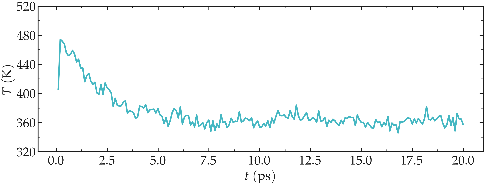
Figure: Evolution of the temperature, \(T\), as a function of the time, \(t\) during the \(NVT\) molecular dynamics simulation.
Molecular dynamics (\(NpT\))¶
Now that the temperature of the system is properly equilibrated, let us continue the simulation in the \(NpT\) ensemble, where the pressure \(p\) of the system is imposed by a barostat and the volume of the box \(V\) is allowed to relax. During \(NpT\) relaxation, the density of the fluid should converge toward its equilibrium value. Create a new input script, call it npt.mdp, and copy the following lines into it:
integrator = md
nsteps = 80000
dt = 0.001
comm_mode = linear
comm_grps = system
cutoff-scheme = Verlet
nstlist = 10
ns_type = grid
nstlog = 100
nstenergy = 100
nstxout-compressed = 1000
vdw-type = Cut-off
rvdw = 1.0
coulombtype = pme
fourierspacing = 0.1
pme-order = 4
rcoulomb = 1.0
constraint-algorithm = lincs
constraints = hbonds
tcoupl = v-rescale
ld-seed = 48456
tc-grps = Water non-Water
tau-t = 0.5 0.5
ref-t = 360 360
So far, the differences with the previous \(NVT\)
script are the duration of the run (the value of nsteps),
and the removing of the gen-vel and gen-temp commands,
because the atoms already have a velocity.
Let us add an the isotropic C-rescale pressure coupling with a target pressure of 1 bar [19] by adding the following to npt.mdp:
pcoupl = C-rescale
Pcoupltype = isotropic
tau_p = 1.0
ref_p = 1.0
compressibility = 4.5e-5
Run the \(NpT\) equilibration using:
gmx grompp -f inputs/npt.mdp -c nvt.gro -o npt -pp npt -po npt
gmx mdrun -v -deffnm npt
Let us have a look a the temperature, the pressure, and the
volume of the box during the NPT step using the gmx energy
command 3 consecutive times:
gmx energy -f npt.edr -o npt-T.xvg
gmx energy -f npt.edr -o npt-p.xvg
gmx energy -f npt.edr -o npt-rho.xvg
Choose respectively temperature (10), pressure (11) and
density (16).
The results show that the temperature remains well controlled during the NPT run, and that the fluid density was initially too small, i.e., \(\rho \approx 600\,\mathrm{kg}/\mathrm{m}^3\). Due to the change in volume induced by the barostat, the fluid density gently reaches its equilibrium value of about \(1000\,\mathrm{kg}/\mathrm{m}^3\) after a few tens of pico-seconds. Once the system has reached its equilibrium density, the pressure stabilizes itself near the desired value of 1 bar.
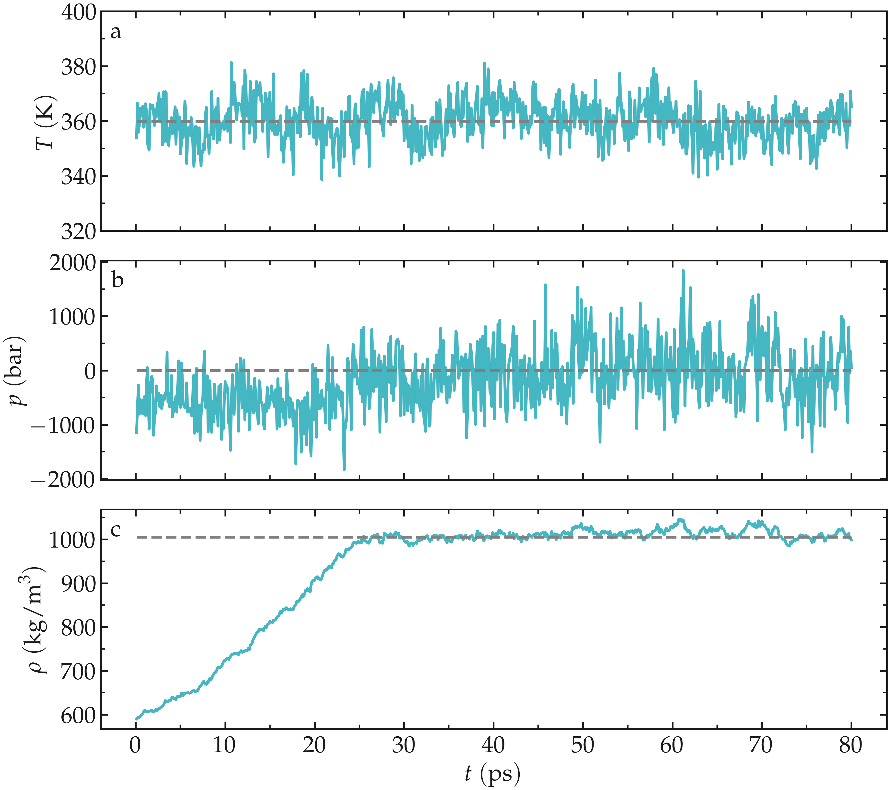
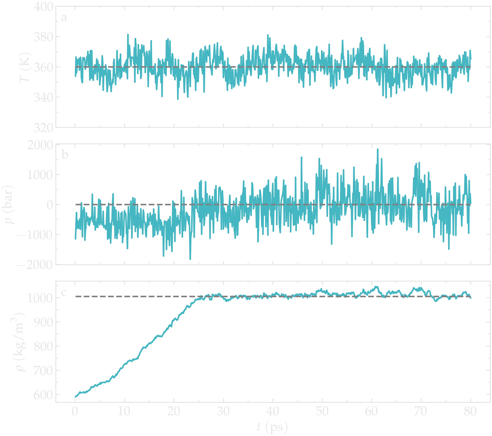
Figure: Evolution of the temperature, \(T\) (a), pressure, \(p\) (b), and fluid density, \(\rho\) (c) as a function of the time during the \(NpT\) equilibration.
The pressure curve reveals large oscillations in the pressure, with the pressure alternating between large negative values and large positive values. These large oscillations are typical in molecular dynamics and are not a source of concern here.
Production run¶
Let us perform a \(400~\text{ps}\) run in the \(NVT\) ensemble, during which the atom positions will be printed every pico-second. The trajectory will then be used to measure to probe the structure and dynamics of the system.
Create a new input file within the inputs/ folder, call it production.mdp, and copy the following lines into it:
integrator = md
nsteps = 400000
dt = 0.001
comm_mode = linear
comm_grps = system
cutoff-scheme = Verlet
nstlist = 10
ns_type = grid
nstlog = 100
nstenergy = 100
nstxout-compressed = 1000
vdw-type = Cut-off
rvdw = 1.0
coulombtype = pme
fourierspacing = 0.1
pme-order = 4
rcoulomb = 1.0
constraint-algorithm = lincs
constraints = hbonds
tcoupl = v-rescale
ld-seed = 48456
tc-grps = Water non-Water
tau-t = 0.5 0.5
ref_t = 360 360
All these commands have been seen in the previous part. Run it with GROMACS starting from the system equilibrated at equilibrium temperature and pressure, npt.gro, using:
gmx grompp -f inputs/production.mdp -c npt.gro -o production -pp production -po production
gmx mdrun -v -deffnm production
Measurement¶
After completing the simulation, we proceed to compute the radial distribution functions (RDF):
where \(V\) is the volume of the simulation box, \(N_{\text{ref}}\) is the number of reference atoms, \(\rho\) is the average number density of particles in the system, and \(\frac{dN(r)}{dr}\) is the number of particles in a spherical shell of thickness \(dr\) around a reference particle at distance \(r\).
First, let us measure the RDF between \(\text{Na}^+\) ions and
\(\text{H}_2\text{O}\) molecules, as well as between \(\text{SO}_4^{2-}\)
ions and \(\text{H}_2\text{O}\) molecules. This can be done using the
gmx rdf command as follows:
gmx rdf -f production.xtc -s production.tpr -o production-rdf-na-h2o.xvg
Then select the sodium ions as reference by typing 3, the water as
selection by typing 4, and press Ctrl+D. The same can be done for
\(\text{SO}_4^{2-}\) ions by typing:
gmx rdf -f production.xtc -s production.tpr -o production-rdf-so4-h2o.xvg
and then by typing 2 and 4.
The results show multiple peaks, corresponding to the most likely distances between the ions and the water molecules.
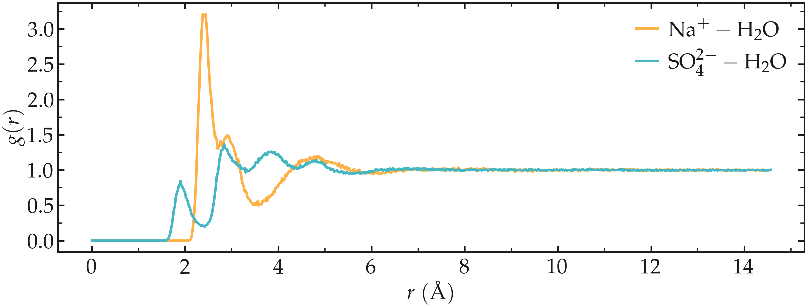
Figure: Radial distribution functions (RDF) calculated between sodium and water (\(\text{Na}^+ - \text{H}_2\text{O}\)), and between sulfate and water (\(\text{SO}_4^{2-} - \text{H}_2\text{O}\)).
The main issue with the calculated RDFs is that they includes all the atoms from
the \(\text{H}_2\text{O}\) molecules (including the hydrogen atoms) and all
the atoms from the \(\text{SO}_4^{2-}\) ions, leading to more peaks and
depths, making analysis more difficult. RDFs would be easier to interpret if
only the water oxygen atoms (with name OW1) and the sulfur atoms of the
\(\text{SO}_4^{2-}\) ions (with name S1) were included in the analysis.
Since these groups were not included in the original GROMACS group, we need to
create them ourselves. To create groups, we can use the gmx make_ndx command
as follows:
gmx make_ndx -f production.tpr
Then type a OW1 and press enter, a S1 and press enter, and finally
press q to save and quit. This will create a file named index.ndx that
contains two additional groups (named OW1 and S1) alongside the default ones:
(...)
3223 3224 3225 3226 3227 3228 3229 3230 3231 3232 3233 3234 3235 3236 3237
3238 3239 3240 3241 3242
[ non-Water ]
1 2 3 4 5 6 7 8 9 10 11 12 13 14 15
16 17 18 19 20 21 22 23 24 25 26 27 28 29 30
31 32 33 34 35 36 37 38 39 40 41 42
[ OW1 ]
43 47 51 55 59 63 67 71 75 79 83 87 91 95 99
103 107 111 115 119 123 127 131 135 139 143 147 151 155 159
(...)
3163 3167 3171 3175 3179 3183 3187 3191 3195 3199 3203 3207 3211 3215 3219
3223 3227 3231 3235 3239
[ S1 ]
5 10 15 20 25 30
Then, let us rerun the gmx rdf command using the index.ndx file and
selecting the newly created groups:
gmx rdf -f production.xtc -s production.tpr -o production-rdf-na-OW1.xvg -n index.ndx
and select 3 and 7.
gmx rdf -f production.xtc -s production.tpr -o production-rdf-so4-OW1.xvg -n index.ndx
and select 8 and 7. As can be seen by plotting the generated .xvg files, the RDF is much cleaner now that we have selected the atoms of interest.
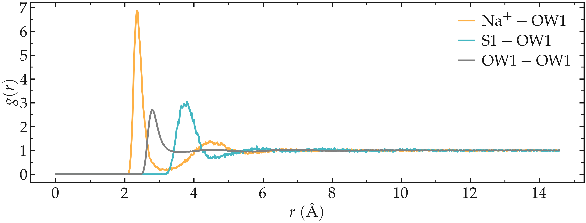
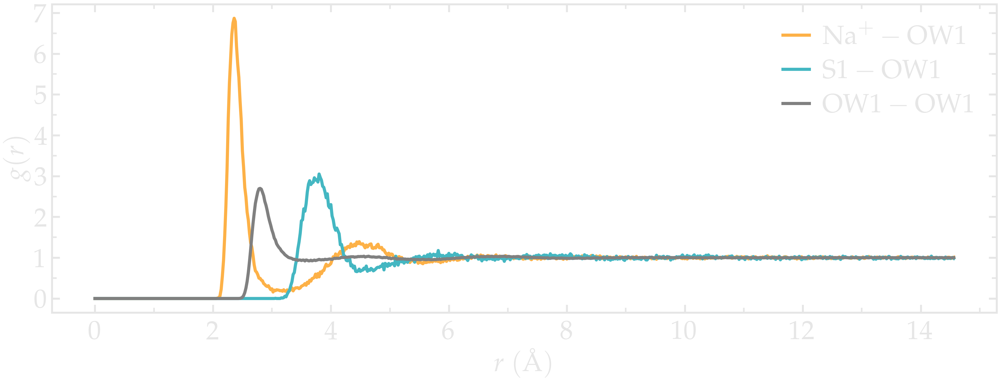
Figure: Radial distribution functions (RDF) calculated between sodium and water oxygens (\(\text{Na}^+ - \text{OW1}\)), between sulfur and water oxygens (\(\text{S1} - \text{OW1}\)), and between water oxygens (\(\text{OW1} - \text{OW1}\)).
The radial distribution functions highlight the typical distance between the different species of the fluid. For instance, it can be seen that there is a strong hydration layer of water around sodium ions at a typical distance of \(2.4 ~ \text{Å}\) from the center of the sodium ion.
You can access all the input scripts and data files that are used in these tutorials from GitHub.